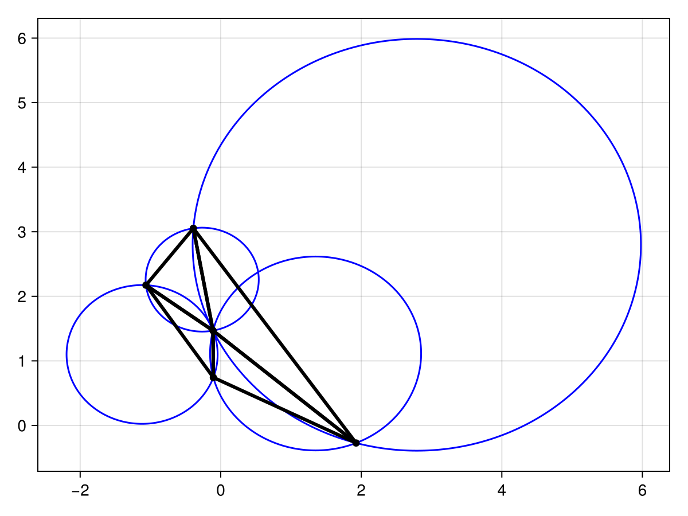
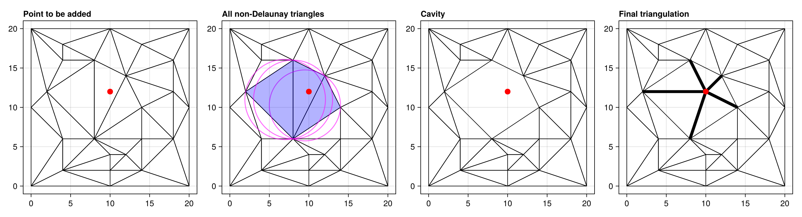
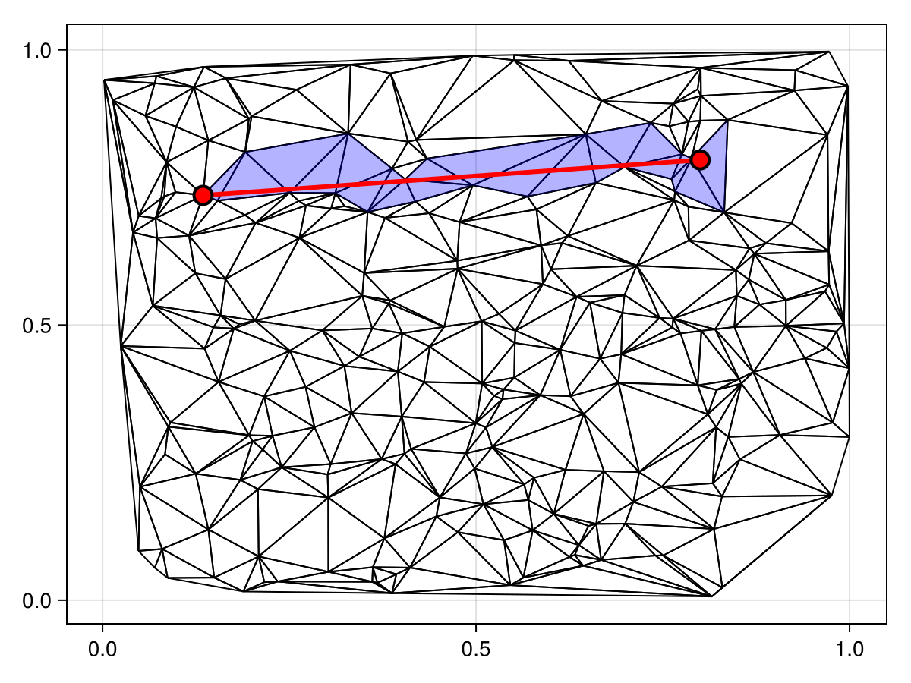
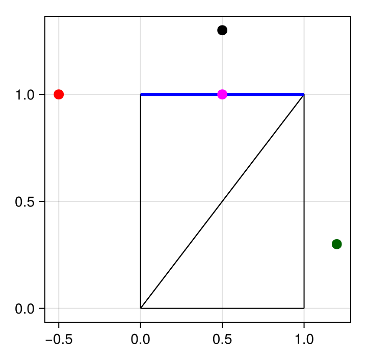
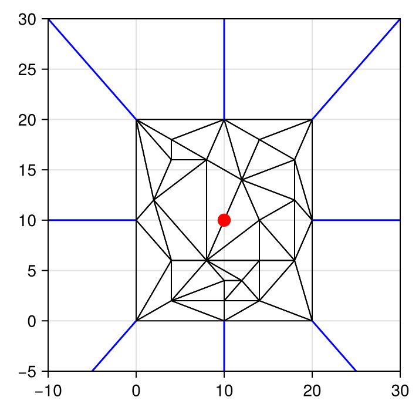

Delaunay Triangulations
Triangulations
We start this section by introducing what Delaunay triangulations actually are. To precisely define a Delaunay triangulation first requires a few other definitions, so we will spare some of these exact details. Roughly speaking, a triangulation is a partition of a set of points $\mathcal P \subseteq \mathbb R^2$ in the plane into non-overlapping triangles, such that the union of the triangles is the convex hull of the points and any two triangles intersect either at a common edge or not at all.[1] Here, a convex hull is the smallest convex set containing all the points. We will use $\mathcal T(\mathcal P)$ to denote any triangulation of $\mathcal P$, and $\mathcal C\mathcal H(\mathcal P)$ to denote the convex hull of $\mathcal P$. It is possible to show that any given $\mathcal P$ will have a triangulation.
Delaunay Property
There are several ways to motivate the Delaunay property, but here we will just skip straight to the definition. We have two definitions to make first, relative to some point set $\mathcal P$:
- A triangle $T$ is said to be Delaunay if its open circumcircle contains no points of $\mathcal P$ in its interior. Note that this does not prohibit points from being on the boundary of the circumcircle.
- An edge $e$ is said to be Delaunay if its diametral circle contains no points of $\mathcal P$ in its interior. Here, the diametral circle of an edge $e$ is the circle whose diameter is the edge $e$.
With these definitions, we say that a triangulation $\mathcal T(\mathcal P)$ is a Delaunay triangulation, and write $\mathcal D\mathcal T(\mathcal P)$, if each triangle $T \in \mathcal T(\mathcal P)$ is Delaunay. Note that $\mathcal D\mathcal T(\mathcal P)$ is not necessarily unique if there are cocircular vertices. If we adjust the above definitions to instead require that the closed circumcircles contain no points in $\mathcal P$ other than those from $T$, meaning $T$ is strongly Delaunay, then the triangulation would instead be unique. It is possible to show the following fact, known as the Delaunay lemma: Given a triangulation $\mathcal T(\mathcal P)$ of a point set, the following three statements are equivalent:
- We have $\mathcal T(\mathcal P) = \mathcal D\mathcal T(\mathcal P)$.
- Every edge in $\mathcal T$ is Delaunay.
- Every edge in $\mathcal T$ is locally Delaunay. Here, locally Delaunay means that $e$ is either (1) an edge of fewer than two triangles in $\mathcal T$, or (2) an edge of exactly two triangles $T_1$ and $T_2$ and the open circumcircle of $T_2$ contains no vertex of $T_1$.
Below we show an example of Delaunay triangulation.
We can see that the circumcircles of the triangles contain no points in their interior. This is a Delaunay triangulation.
Bowyer-Watson Algorithm
Let us now discuss how we actually construct a Delaunay triangulation. The algorithm we use is the famous Bowyer-Watson algorithm, an incremental algorithm that builds the Delaunay triangulation one at a time. Suppose we have started with some initial triangulation $\mathcal D\mathcal T(\mathcal P_0)$, where $\mathcal P_0 \subseteq \mathcal P$, and we want to add in some point $p$, giving $\mathcal D\mathcal T(\mathcal P_0 \cup \{p\})$. To do this, we:
- Find one triangle whose open circumdisk contains $p$.
- Find all the other triangles by a depth-first search in the triangulation.
- Delete all the triangles containing $p$ in their circumcircle, leaving behind a polyhedral cavity.
- For each edge of this cavity, adjoin the vertices to $p$ to create a new triangle.
This procedure will give us $\mathcal D\mathcal T(\mathcal P_0 \cup \{p\})$. Let's consider an example of this procedure.
In the above figure, we are considering insertion the red point into the triangulation. We then then all triangles whose circumcircles contain this red point, shown in blue. Deleting these triangles leaves behind a cavity shown in the third figure. Finally, connecting the vertices of the cavity to the red point gives the final triangulation.
Of course, this procedure is hiding away many important details and leaves more questions than answers:
- How do we find a triangle containing the point in its circumdisk?
- How do we perform a depth-first search to find all the triangles?
- How do we determine if a point is inside a circumcircle?
- What happens if the point is outside of the triangulation?
- How do we initialise the triangulation?
Let's address all these questions.
Point Location
The problem of finding a triangle containing a point in its circumdisk is related to point location. Here, our point location problem is: Given a point $p$, find a triangle $T \in \mathcal D\mathcal T(\mathcal P)$ containing $p$; note that finding a triangle containing $p$ will be the same as finding a triangle containing $p$ in its circumdisk. We use a jump and march algorithm for this, following the work of Mücke et al. (1999). The basic idea is simple: To find a triangle $T$ containing a point $p$, start from some point $q$ and walk along the triangulation in the direction of the line $qp$ until such a triangle is found. here is an example:
The algorithm draws a line connecting some initial point $q$ and the search point $p$, as shown in red, and then marches along triangles until $p$ is found, traversing the blue triangles shown above.
Depth-First Search
We also need to discuss how a depth-first search is used to find all the triangles containing the point $p$ in their circumcircles, using the triangle $T$ found from point location for initialising the search. The idea is reasonably simple. Let's consider a single edge of $T = T_{ijk}$, say $e_{ij}$, assuming for now that $e_{ij}$ is not a boundary edge so that there exists a triangle $T_{ji\ell}$ that adjoins $e_{ij}$. If the circumcircle of $T_{ji\ell}$ contains $p$, then in addition to deleting $T_{ijk}$ from the triangulation we also know that $T_{ji\ell}$ can be deleted. If instead $T_{ji\ell}$ does not contain $p$ in its circumcircle, we know that $e_{ij}$ is an edge of the final cavity and we can thus add $T_{ijr}$ to the triangulation, where $r$ is the vertex associated with the point $p$. We apply this method of searching across edges to each other edge of $T_{ijk}$, and then to each edge of the triangles found in these searches, until all triangles containing $p$ in their circumcircles are found.
The problem of finding the vertex $\ell$ is also an important issue. To address this, we define a map $\mathcal A \colon \mathcal E \to \mathcal V$, called the adjacent map, that takes an edge $e_{ij}$ to a vertex $\ell$ such that $T_{ij\ell}$ is a triangle in the triangulation. This map is used to find the vertex $\ell$ in the above search. We define $\mathcal A(e_{ij}) = \emptyset$ if there is no such $\ell$.
Let us now make this search algorithm more concrete. In code, omitting many details, we could implement this as
function add_point!(pᵣ, Tᵢⱼₖ)
delete_triangle!(Tᵢⱼₖ)
dig_cavity!(pᵣ, eᵢⱼ)
dig_cavity!(pᵣ, eⱼₖ)
dig_cavity!(pᵣ, eₖᵢ)
return
end
function dig_cavity!(pᵣ, eᵢⱼ)
ℓ = get_adjacent(eⱼᵢ)
x === ∅ && return # the triangle was already deleted
if in_circle(pᵣ, Tᵢⱼₗ) # Tᵢⱼₖ and Tⱼᵢₗ are not Delaunay
delete_triangle!(Tⱼᵢₗ)
dig_cavity!(pᵣ, eᵢₗ)
dig_cavity!(pᵣ, eₗⱼ)
else # eᵢⱼ is an edge of the polygonal cavity
add_triangle!(Tᵣᵢⱼ)
end
return
endIncircle Predicate
To determine if a point is inside a triangle's circumcircle, we need to use a predicate. The in_circle predicate is used for this. In particular:
\[\text{in_circle}(a, b, c, d) = \begin{vmatrix} a_x & a_y & a_x^2 + a_y^2 & 1 \\ b_x & b_y & b_x^2 + b_y^2 & 1 \\ c_x & c_y & c_x^2 + c_y^2 & 1 \\ d_x & d_y & d_x^2 + d_y^2 & 1 \end{vmatrix} \]
can be used to determine the position of a point $d$ relative to a triangle $T_{abc}$'s circumcircle: If the determinant is positive, then $d$ is inside the circumcircle; if it is negative, then $d$ is outside the circumcircle; and if it is zero, then $d$ is on the circumcircle. This predicate is used in the above search algorithm to determine if a point is inside a circumcircle. We use ExactPredicates.jl for this predicate.
Exterior Points
When a point is outside of the triangulation, notice that there will be no triangle containing $p$, and so our point location step will fail. To overcome this, we need what is known as a ghost vertex, which is a point out at infinity that all edges on the boundary share an edge with. In order for us to work with this, we need to understand how to treat the circumcircle of such a triangle with a point out at infinity, called a ghost vertex. Let $g$ denote the ghost vertex, and let $T_{ijg}$ be a ghost triangle. To get this triangle's circumcircle, imagine some point on the side of $e_{ij}$ and dragging it slowly out to infinity. In the limit, the circle eventually becomes a straight line, and so the circumcircle of $T_{ijg}$ should be considered as the oriented outer halfplane of $e_{ij}$: The union of the halfplane on the side of $e_{ij}$ away from the triangulation's interior and the open edge $e_{ij}$. Using this definition, we can say that a ghost triangle $T_{ijg}$ should be deleted if $p$ falls in the oriented outer halfplane of $e_{ij}$. To determine this position, we can use the orient predicate, defined as:
\[\text{orient}(a, b, c) = \begin{vmatrix} a_x & a_y & 1 \\ b_x & b_y & 1 \\ c_x & c_y & 1 \end{vmatrix}\]
which says that $c$ is on the right of the line $ab$ if the determinant is positive, on the left if it is negative, and on the line if it is zero.
Let us consider an example.
In this example, we are interested in the ghost triangle associated with the blue edge. The oriented outer halfplane for this edge can be defined simply as $H = \{(x, y) ∈ \mathbb R^2 : y > 1\} ∪ \{(x, y) ∈ \mathbb R^2 : 0 < x < 1, y = 1\}$. Using this definition, we see that the red point is not in $H$, the magenta point is in $H$ (in fact, it is exactly on $\partial H$, where $\partial H$ denotes the boundary of $H$), the black point is in $H$, and the green point is not in $H$.
Now that we have a way of identifying when ghost triangles should be deleted, we need a way to uniquely associate an exterior point with a ghost triangle. To do this, we associate with the triangulation a central point, typically the centroid when the triangulation is constructed, that each ghost edge $e_{ig}$ is oriented with. In particular, take some vertex $v_i$ on the boundary of the triangulation so that $e_{ig}$ is a ghost edge. We treat the ghost edge $e_{ig}$ as a ray emnating from $p_i$ out to infinity, oriented in the direction of the central point. Using this definition, we are able to split the region of space outside of the triangulation into a non-overlapping set of convex sets. Consider the example below:
The ghost edges are the blue lines, and the central point is the red dot. With this definition, we therefore see that we can uniquely each region in space with a triangle - be it a ghost triangle or a real (solid) triangle.
Initialising the Triangulation
The initialisation of the triangulation is simple. We pick three points $p_i$, $p_j$, and $p_k$ at random, ordering them so that they define a positively oriented triangle. We add $T_{ijk}$ into the triangulation, initialise the adjacent map $\mathcal A$, add the ghost triangles $T_{jig}$, $T_{kij}$, and $T_{kji}$, and initialise the central point as $c = (p_i + p_j + p_k) / 3$.
Putting Everything Together
Now having all these pieces of the algorithm together, the Bowyer-Watson algorithm can be implemented. The order of the points that we insert into the triangulation is random. Rather than rewrite the algorithm, we just note that the simple description we initially gave is still accurate, but of course the internal details have a lot of complications.
- 1This is not the only possible definition of a triangulation. We could also define $\mathcal T(\mathcal P)$ to be a maximal planar subdivision whose vertex set is $\mathcal P$, where a maximal planar subdivision is a planar graph such that no edge can be added without intersecting other existing edges. With this definition though, there is some extra work to be done to show that the boundary of $\mathcal T(\mathcal P)$ is indeed $\mathcal C\mathcal H(\mathcal P)$. To see this, take some edge $e_{ij}$ on the boundary $\mathcal T(\mathcal P)$. To argue that $e_{ij}$ is on the boundary of $\mathcal C\mathcal H(\mathcal P)$, we argue by contradiction. Suppose that $e_{ij}$ is not on the boundary of $\mathcal C\mathcal H(\mathcal P)$. Then either $e_{ij}$ is inside of $\mathcal C\mathcal H(\mathcal P)$, or it is on the outside. It of course cannot be outside of $\mathcal C\mathcal H(\mathcal P)$ since there would have to be some edge $e_{kl}$ that is inside of $\mathcal C\mathcal H(\mathcal P)$ that intersects $e_{ij}$, which is a contradiction to the maximal planarity. So, $e_{ij}$ has to be inside. This implies that there is some space to the side of $\mathcal T(\mathcal P)$ near $e_{ij}$ that is not contained inside $\mathcal C\mathcal H(\mathcal P)$, but this implies that there is a line segment that would have to go outside of the convex hull, which is a contradiction. Thus, $e_{ij}$ must be on the boundary, and so each edge of $\mathcal T(\mathcal P)$'s boundary is on the boundary of $\mathcal C\mathcal H(\mathcal P)$, meaning $\partial\mathcal T(\mathcal P) = \mathcal C\mathcal H(\mathcal P)$, where $\partial\mathcal T(\mathcal P)$ is the boundary of $\mathcal T(\mathcal P)$.